TAU Computational Linguistics Lab
Research
The Tel Aviv University Computational Linguistics Lab uses computational methods to investigate human language acquisition. Researchers in the lab seek to offer a perspective on learning and learnability that is informed by work in theoretical linguistics, psychology, and computer science and to support collaboration between these fields in addressing a shared research question: what can be learned?
The lab's overarching research project is the creation of a fully general model of language acquisition that will allow divergent representations of grammar proposed in the linguistic literature to be evaluated and compared on a computationally and cognitively sound basis. Current projects include research on the acquisition of phonology, using both Optimality Theory and rule-based systems as models, research on the acquisition of mildly context-sensitive grammars in syntax, and a study of the computational advantages and disadvantages of segregating the lexicon from the syntactic component.
The Computational Linguistics Lab is part of the Linguistics Department and the Sagol School of Neuroscience.
People
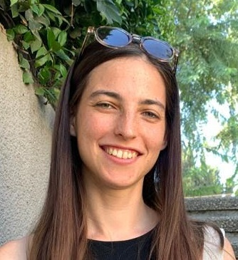
Lab manager: Orr Well
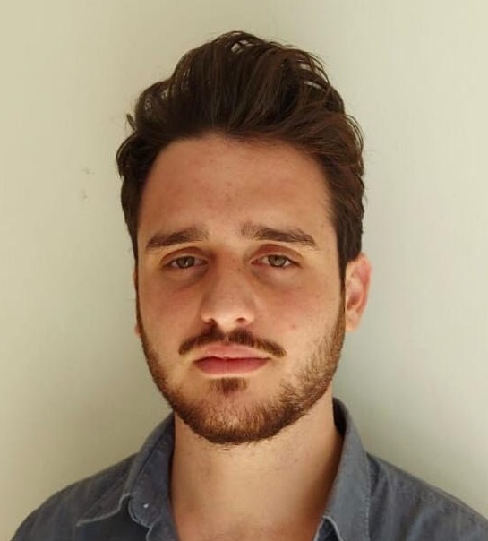
Imry Ziv
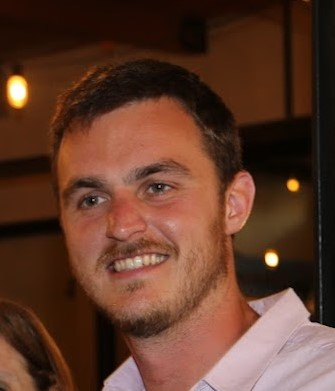
Idan Tarshish
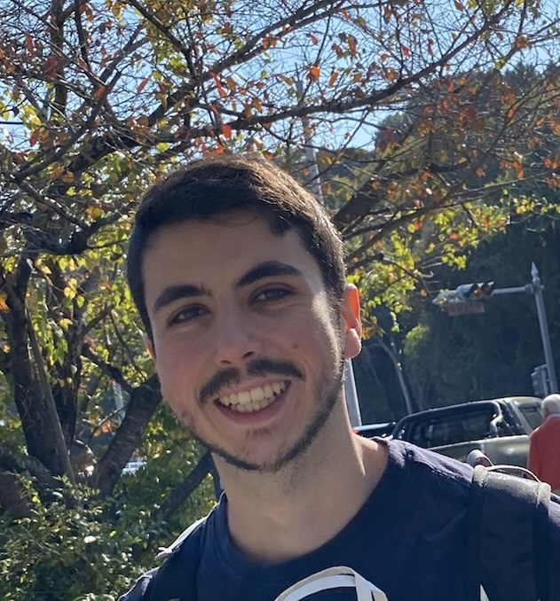
Yuval Mishan
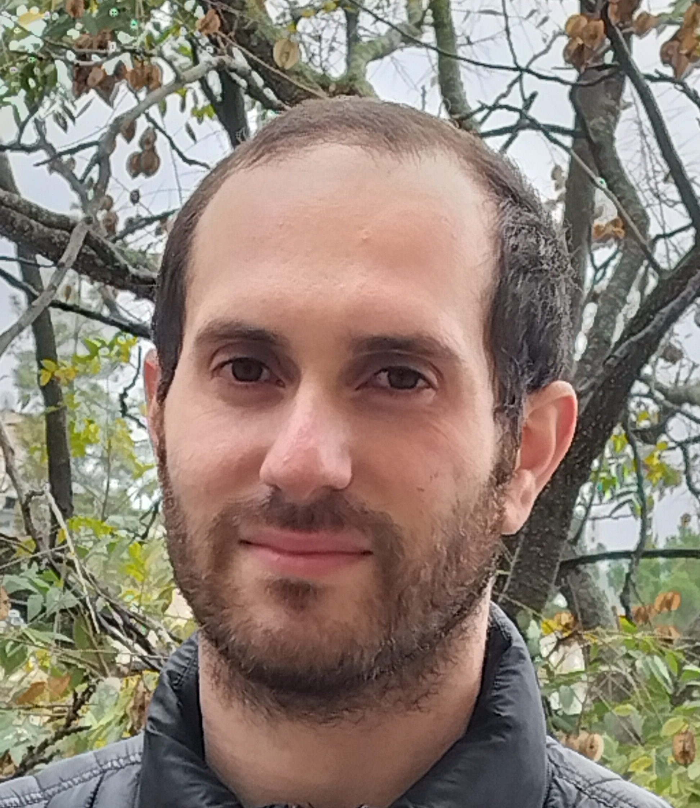
Ariel Hovav
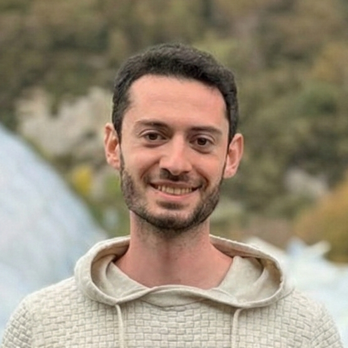
Ron Othnay
TAU Collaborators
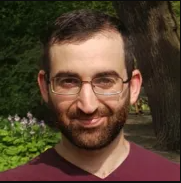
Ezer Rasin

Moshe E. Bar-Lev
Alumni

Matan Abudy
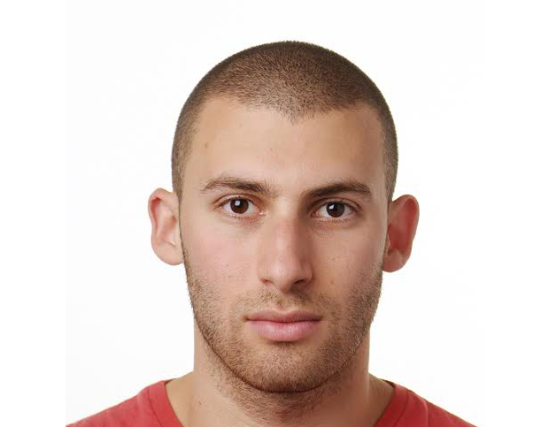
Nur Lan
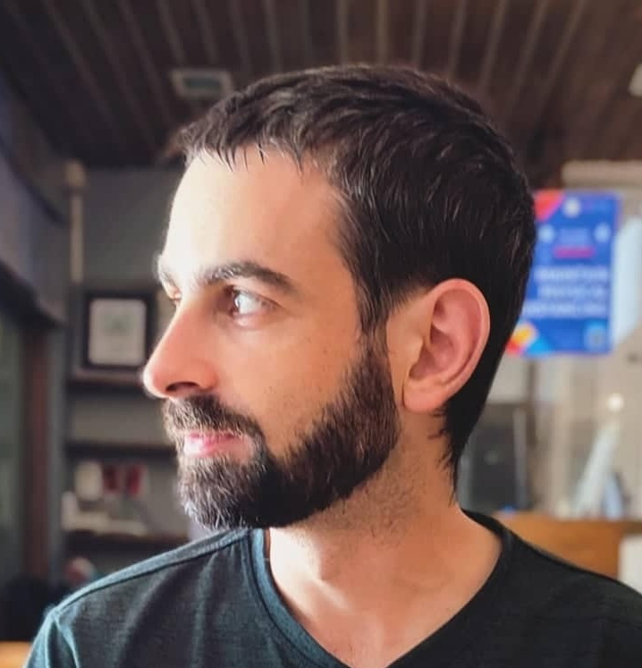
Aviv Schoenfeld
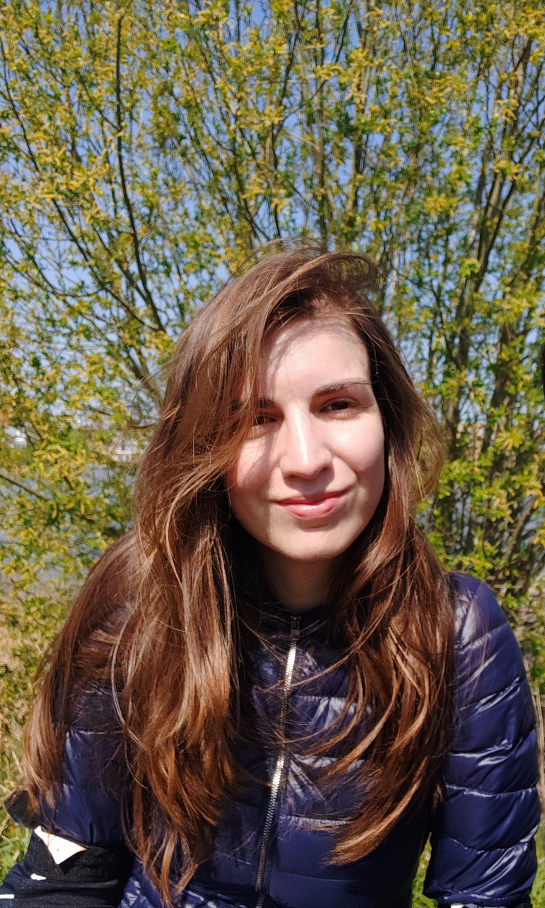
Milica Denic

Alma Frischoff
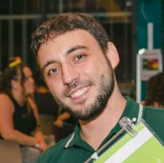
Dani Rodov
Maike Züfle
Adi Behar Medrano
Taly Rabinerson
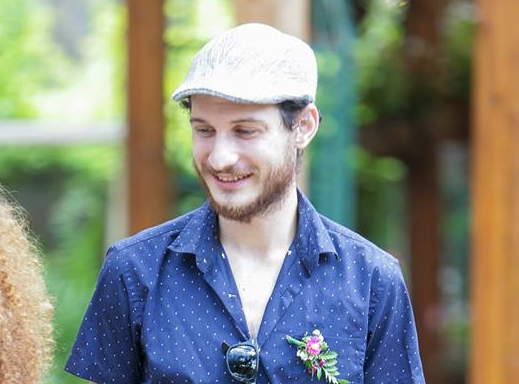
Itamar Shefi
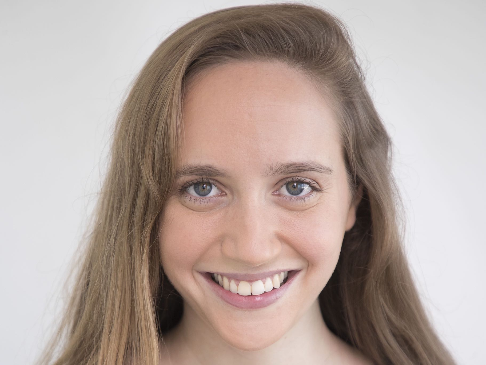
Noa Peled
Iddo Berger
Adam Rimon
Tomer Avraham
Victoria Costa
Sefi Potashnik
Tali Arad
Courses
Fall semester
0627.4090 Advanced Computational Linguistics
0627.4191 Parsing: Computation and Cognition
Spring semester
0627.2222 Computational Linguistics for Beginners
0627.4095 Learning: Computation and Cognition
Course descriptions
Syllabus
This is an introductory class in computational linguistics designed for linguists with little or no background in the subject. The class will not require a programming background. By the end of the course, students will be able to do basic-to-intermediate level programming in a language chosen for its appropriateness to the relevant work. Other topics will include the basics of data structures and algorithms and an introduction to Formal Language Theory.
This is an introductory class in computational linguistics designed for linguists with little or no background in the subject. The class will not require a programming background. By the end of the course, students will be able to do basic-to-intermediate level programming in a language chosen for its appropriateness to the relevant work. Other topics will include the basics of data structures and algorithms and an introduction to Formal Language Theory.
Syllabus
This course will continue to build skills needed to conduct original research in computational linguistics. Programming ability is required. We will discuss finite-state tools (automata and transducers), as well as Hidden Markov and Maximum Entropy Models. We will build a morphological analyzer and a syntactic parser.
This course will continue to build skills needed to conduct original research in computational linguistics. Programming ability is required. We will discuss finite-state tools (automata and transducers), as well as Hidden Markov and Maximum Entropy Models. We will build a morphological analyzer and a syntactic parser.
Syllabus
Part I: Computation.
In the first half of the semester we will explore mathematical and computational approaches to learning and learnability. We will study Gold's theorem from 1967 that shows that under certain assumptions, learning of even very simple classes of languages is impossible. We will proceed to discuss probabilistic approaches to learning, such as Horning's modification of Gold's paradigm and Valiant's paradigm of Probably Approximately Correct learning. We will discuss artificial neural networks, which have been proposed as a general, biologically motivated approach to learning. We will also cover Monte Carlo methods and genetic algorithms, which have been used to search through large and complex spaces of hypotheses. We will end the mathematical part of the semester with the notions of Kolmogorov Complexity and Solomonoff Induction, which allow us to quantify the total amount of information in a given input.
Part II: Cognition.
In the second half of the semester we will look at experimental attempts to determine what can and cannot be learned. We will review the experiments that led behaviorists such as Watson and Skinner to adopt a radical empiricist approach and the evidence that convinced ethologists such as Lorenz and Tinbergen to emphasize instinct. We will examine results that show that humans are very good at extracting certain kinds of statistical regularities from unanalyzed data but very bad at learning other, seemingly similar patterns. We will end the semester by looking at what can be said about the division of labor between innateness and learning based on typological generalizations and at the nuanced view on this connection offered by evolutionary approaches to language change.
Part I: Computation.
In the first half of the semester we will explore mathematical and computational approaches to learning and learnability. We will study Gold's theorem from 1967 that shows that under certain assumptions, learning of even very simple classes of languages is impossible. We will proceed to discuss probabilistic approaches to learning, such as Horning's modification of Gold's paradigm and Valiant's paradigm of Probably Approximately Correct learning. We will discuss artificial neural networks, which have been proposed as a general, biologically motivated approach to learning. We will also cover Monte Carlo methods and genetic algorithms, which have been used to search through large and complex spaces of hypotheses. We will end the mathematical part of the semester with the notions of Kolmogorov Complexity and Solomonoff Induction, which allow us to quantify the total amount of information in a given input.
Part II: Cognition.
In the second half of the semester we will look at experimental attempts to determine what can and cannot be learned. We will review the experiments that led behaviorists such as Watson and Skinner to adopt a radical empiricist approach and the evidence that convinced ethologists such as Lorenz and Tinbergen to emphasize instinct. We will examine results that show that humans are very good at extracting certain kinds of statistical regularities from unanalyzed data but very bad at learning other, seemingly similar patterns. We will end the semester by looking at what can be said about the division of labor between innateness and learning based on typological generalizations and at the nuanced view on this connection offered by evolutionary approaches to language change.
Syllabus
Part I: Computation.
In the first half of the semester we will cover mathematical and computational approaches to parsing. We start by reviewing the basic algorithms for parsing with regular and context-free formalisms, both deterministically and probabilistically. We discuss the notions of weak and strong generative capacity, looking in detail at context-sensitive node admissibility conditions, generalized phrase-structure grammar, and the Lambek calculus. We then turn to mildly context-sensitive formalisms, focusing in particular on combinatory categorial grammars, tree-adjoining grammars, and minimalist grammars.
Part II: Cognition.
In the second half of the semester we discuss attempts to understand how human parsing works. We start with the classical proposals of Yngve, Miller and Chomsky, and Kimball, and then proceed to characterizations of the memory loads in different parsing strategies. We discuss the Strong Competence Hypothesis and its relation to the question of whether non-canonical constituents should be part of the grammar. We will look at proposals that tie processing difficulties to the geometric notion of open dependencies in proof nets, along with other attempts to capture processing costs in terms of resource management, such as Gibson's dependency locality theory. We also discuss approaches, such as Hale's surprisal and entropy-reduction proposals, that relate processing difficulty to the information content of the current input element.
Part I: Computation.
In the first half of the semester we will cover mathematical and computational approaches to parsing. We start by reviewing the basic algorithms for parsing with regular and context-free formalisms, both deterministically and probabilistically. We discuss the notions of weak and strong generative capacity, looking in detail at context-sensitive node admissibility conditions, generalized phrase-structure grammar, and the Lambek calculus. We then turn to mildly context-sensitive formalisms, focusing in particular on combinatory categorial grammars, tree-adjoining grammars, and minimalist grammars.
Part II: Cognition.
In the second half of the semester we discuss attempts to understand how human parsing works. We start with the classical proposals of Yngve, Miller and Chomsky, and Kimball, and then proceed to characterizations of the memory loads in different parsing strategies. We discuss the Strong Competence Hypothesis and its relation to the question of whether non-canonical constituents should be part of the grammar. We will look at proposals that tie processing difficulties to the geometric notion of open dependencies in proof nets, along with other attempts to capture processing costs in terms of resource management, such as Gibson's dependency locality theory. We also discuss approaches, such as Hale's surprisal and entropy-reduction proposals, that relate processing difficulty to the information content of the current input element.
Publications
- Imry Ziv, Nur Lan, Emmanuel Chemla, Roni Katzir (2026) Large language models as proxies for theories of human linguistic cognition. Journal of Language Modelling.
- Orr Well, Moshe E. Bar-Lev, Roni Katzir (2026) Focus Ineffability Effects Follow from Conditions on Question Answering. Under review.
- Roni Katzir (2025) Gaps and doublets, rational learning, and a knowledge norm on forms. Under review.
- Matan Abudy, Orr Well, Nur Lan, Emmanuel Chemla, Roni Katzir (2025) A Minimum Description Length approach to regularization in neural networks. [code]
- Eyal Marco, Ezer Rasin, Roni Katzir (2025) The complementary-distribution challenge for phonological learning: The case of [h] and [N] in English. Under review, Linguistic Inquiry.
- Moshe E. Bar-Lev, Roni Katzir (2024) Attested connectives are better at answering questions. Under review.
- Aviv Schoenfeld, Moshe E. Bar-Lev, Roni Katzir (2024) Aspectual domains for adverbs. To appear in Proceedings of NELS 54.
- Daniel Asherov, Danny Fox, Roni Katzir (2024) Strengthening, exhaustification, and rational inference. Linguistics & Philosophy 47:505–516.
- Nur Lan, Emmanuel Chemla, Roni Katzir (2024) Large language models and the argument from the poverty of the stimulus. Linguistic Inquiry.
- Nur Lan, Emmanuel Chemla, Roni Katzir (2024) Bridging the empirical-theoretical gap in neural network formal language learning using Minimum Description Length. Proceedings of the 62nd Annual Meeting of the Association for Computational Linguistics (ACL 2024), pp. 13198–13210.
- Danny Fox and Roni Katzir (2024) Large Language Models and theoretical linguistics. Theoretical Linguistics 50(1–2):71–76.
- Roni Katzir (2023) Why large language models are poor theories of human linguistic cognition. A reply to Piantadosi. Biolinguistics. 17, Article e13153.
- Matan Abudy, Nur Lan, Emmanuel Chemla, Roni Katzir (2023) Minimum Description Length Hopfield Networks. Presented at NeurIPS workshop on associative memory and Hopfield Networks.
- Roni Katzir (2024) On the roles of anaphoricity and questions in free focus. Natural Language Semantics 32:65–92.
- Nur Lan, Emmanuel Chemla, and Roni Katzir (2023). Benchmarking Neural Network Generalization for Grammar Induction. Proceedings of the 2023 CLASP Conference on Learning with Small Data (LSD); 131–140, Association for Computational Linguistics. [code]
- Moshe E. Bar-Lev and Roni Katzir (2023). Communicative stability and the typology of logical operators. Linguistic Inquiry.
- Moshe Bar-Lev and Roni Katzir (2022). Positivity, (anti-)exhaustivity, and stability. In Degano, M., Roberts, T., Sbardolini, G., and Schouwstra, M. (eds.), Proceedings of the 23rd Amsterdam Colloquium 2022; 22-30.
- Maike Züfle and Roni Katzir (2022). Reasoning about stored representations in semantics using the typology of lexicalized quantifiers. In Gutzmann, D. and Repp, S. (eds.), Proceedings of Sinn und Bedeutung 26 2022; 923-944.
- Nur Lan, Michal Geyer, Emmanuel Chemla, and Roni Katzir (2022). Minimum Description Length Recurrent Neural Networks. Transactions of the Association for Computational Linguistics 2022; 10 785–799. [code]
- Ezer Rasin, Iddo Berger, Nur Lan, Itamar Shefi, and Roni Katzir (2021). Approaching explanatory adequacy in phonology using Minimum Description Length. Journal of Language Modelling, 9(1):17–66. [code]
- Danny Fox and Roni Katzir (2021). Notes on iterated rationality models of scalar implicatures, Journal of Semantics, 38(4), 571–600.
- Ezer Rasin, Itamar Shefi, and Roni Katzir (2020). A unified approach to several learning challenges in phonology. In Asatryan, M., Song, Y., and Whitmal, A., editors, Proceedings of NELS, 50(1), pages 73–86, Amherst, MA. GLSA.
- Ezer Rasin and Roni Katzir (2020) A Conditional Learnability Argument for Constraints on Underlying Representations. Journal of Linguistics, 56(4), 745-773.
- Roni Katzir, Nur Lan, and Noa Peled (2020). A note on the representation and learning of quantificational determiners. In Franke, M., Kompa, N., Liu, M., Mueller, J. L., and Schwab, J., editors, Proceedings of Sinn und Bedeutung, 24(1), pp. 392–410. [code]
- Ezer Rasin, Nur Lan, and Roni Katzir (2018). Simultaneous learning of vowel harmony and segmentation. In Jarosz, G., Nelson, M., O'Connor, B., and Pater, J. (eds.), Proceedings of the Society for Computation in Linguistics 2019, vol. 2, pp. 353–357.
- Nur Lan (2018) Learning morpho-phonology using the Minimum Description Length principle and a genetic algorithm. MA thesis, Tel Aviv University.
- Victoria Costa (2018) An MDL-based computational model for unsupervised joint learning of morphophonological constraints and lexicons in Optimality Theory. MA thesis, Tel Aviv University.
- Ezer Rasin and Roni Katzir (2018) Learning abstract URs from distributional evidence. In Hucklebridge, S. and Nelson, M., editors, Proceedings of NELS 48, pp. 283-290.
- Ezer Rasin, Iddo Berger, Nur Lan, and Roni Katzir (2018) Learning phonological optionality and opacity from distributional evidence. In Hucklebridge, S. and Nelson, M., editors, Proceedings of NELS 48, pp. 269-282.
- Tomer Avraham (2017) Learning head-complement order with Minimalist Grammars. MA thesis, Tel Aviv University.
- Ezer Rasin and Roni Katzir (2016) On evaluation metrics in Optimality Theory. Linguistic Inquiry, 47(2):235–282. [code]
- Ezer Rasin and Roni Katzir (2015) Compression-based learning for OT is incompatible with Richness of the Base.. In Thuy Bui and Deniz Özyıldız (eds.), Proceedings of NELS 45, vol. 2, pp. 267–274.
- Roni Katzir (2014) A Cognitively Plausible Model for Grammar Induction. Journal of Language Modelling 2(2), 213–248..
- Ezer Rasin (2014) An Evaluation Metric for Optimality Theory. MA Thesis, Tel Aviv University.
- Tali Arad (2014) The Nature of Resumptive Pronouns: Evidence from Parasitic Gaps. MA Thesis, Tel Aviv University.
Contact Information
Tel Aviv University ◆ Department of Linguistics ◆ Webb 407
Lab's Github